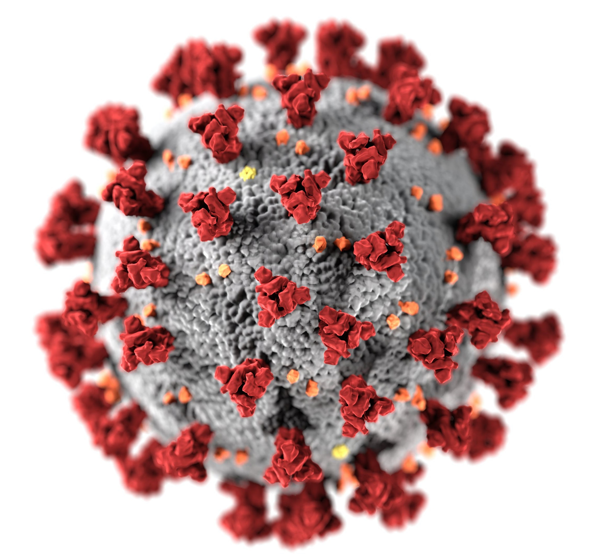

Coronavirus disease (COVID-19) is an infectious disease caused by a newly discovered coronavirus. Most people infected with the COVID-19 virus will experience mild to moderate respiratory illness and recover without requiring special treatment. Older people, and those with underlying medical problems like cardiovascular disease, diabetes, chronic respiratory disease, and cancer are more likely to develop serious illness.
COVID-19 affects different people in different ways. Most infected people will develop mild to moderate illness and recover without hospitalization.
Most common symptoms: fever, dry cough, tiredness.
Less common symptoms: aches and pains, sore throat, diarrhoea, conjunctivitis, headache, loss of taste or smell, a rash on skin, or discolouration of fingers or toes.
Serious symptoms: difficulty breathing or shortness of breath, chest pain or pressure, loss of speech or movement.
Seek immediate medical attention if you have serious symptoms. Always call before visiting your doctor or health facility. People with mild symptoms who are otherwise healthy should manage their symptoms at home.
On average it takes 5–6 days from when someone is infected with the virus for symptoms to show, however it can take up to 14 days.
If you are covid-19 positive, enter your details below:
To know more about coronavirus
click here